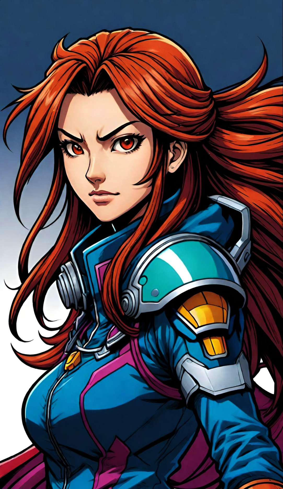
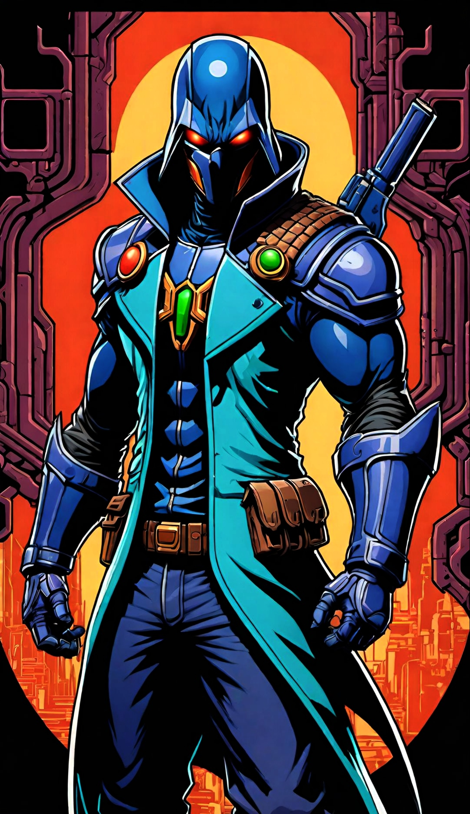
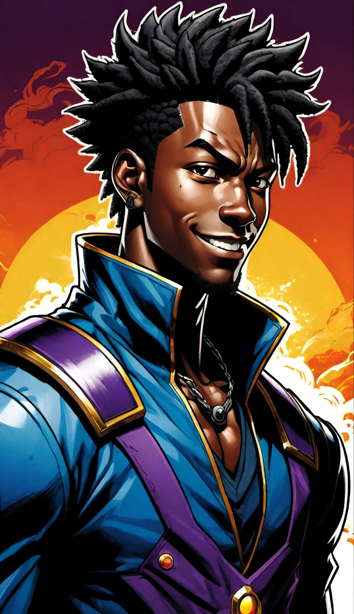
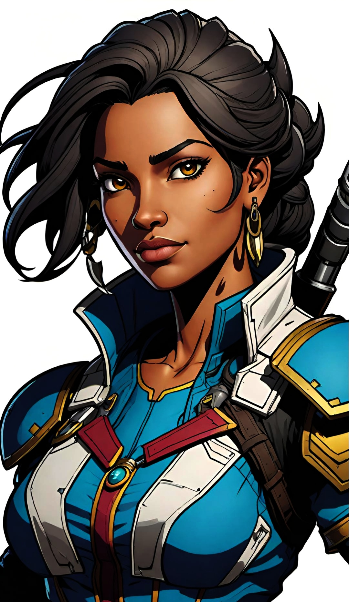
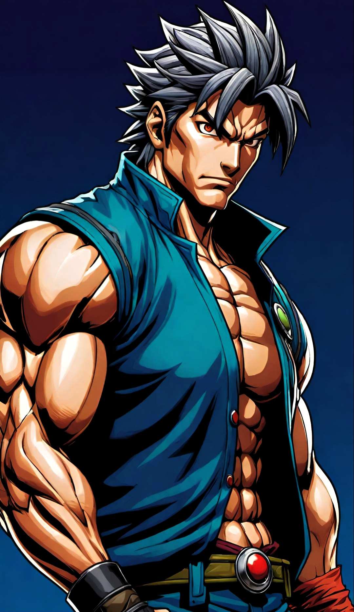

-
Akiko
Descrição
Personalidade: AKiko é extrovertida e tem uma inteligência social impressionante. Ela adora interagir com colegas e está sempre disposta a colaborar em projetos. Sua personalidade vibrante torna o ambiente de trabalho mais animado e produtivo. Habilidade: AKiko é especialista em processamento de linguagem natural, otimização de algoritmos e análise de dados. Além disso, ela é uma excelente comunicadora e sabe como explicar conceitos complexos de forma simples. Se você precisar de ajuda com algum problema técnico ou tiver alguma pergunta, AKiko é a pessoa certa para recorrer!
-
Hikari
Descrição
Personalidade: Hikari é um curioso e determinado. Ele adora desafios e está sempre disposto a explorar sistemas complexos. Sua mente analítica e criativo a torna uma excelente hacker. Habilidade: Hikari é conhecido como um hacker genial. Ele domina várias técnicas de invasão e exploração de vulnerabilidades. Além disso, sua agilidade e reflexos insanos a tornam uma adversário formidável em combate corpo a corpo. Ela também possui um QI de batalha excepcional, encontrando soluções inteligentes mesmo nas situações mais difíceis
-
Isabela
Descrição
Personalidade: Isabela é uma jovem curiosa e determinada. Ela adora desafios e está sempre disposta a explorar conceitos matemáticos complexos. Sua mente analítica e criativa a torna uma excelente aluna. Habilidade: Isabela tem uma habilidade incrível para resolver problemas matemáticos. Ela domina conceitos como álgebra, geometria e cálculo. Além disso, sua capacidade de raciocínio lógico é impressionante. Quando enfrenta um desafio, ela mergulha de cabeça e não desiste até encontrar a solução.
-
Kazuki
Descrição
Personalidade: Kazuki é um desenvolvedor apaixonado por games. Ele é conhecido por sua mente criativa e sua capacidade de pensar fora da caixa. Sua personalidade é curiosa, inquisitiva e sempre em busca de novas ideias para seus projetos. Habilidade: Kazuki domina várias áreas do desenvolvimento de jogos. Ele é especialista em game design, programação, arte e narrativa. Além disso, sua habilidade em criar mecânicas envolventes e balanceadas é impressionante. Seus jogos são cativantes e desafiadores, mantendo os jogadores entretidos por horas a fio.
-
Lara
Descrição
Personalidade: Lara é uma pessoa apaixonada por linguagem e comunicação. Ela é curiosa, observadora e sempre busca entender os padrões e nuances das línguas. Sua mente analítica e criativa a torna uma excelente estudiosa da área. Habilidade: Lara tem uma habilidade incrível para analisar e desvendar estruturas linguísticas. Ela domina conceitos como semântica, sintaxe e fonologia. Além disso, sua capacidade de aprender novos idiomas é impressionante. Quando se trata de línguas, Lara está sempre pronta para explorar e expandir seus conhecimentos.
-
Ryota
Descrição
Personalidade: Ryota é um indivíduo meticuloso e apaixonado por resolver quebra-cabeças lógicos. Ele é curioso, observador e sempre busca aperfeiçoar suas habilidades. Sua mente analítica e focada o torna um verdadeiro mestre na área. Habilidades: Ryota domina várias técnicas de algoritmos. Ele é especialista em otimização, busca, ordenação e estruturas de dados. Quando enfrenta um problema, ele mergulha fundo, explorando diferentes abordagens e refinando suas soluções. Se você precisar de ajuda com algum desafio algorítmico, Ryota é a pessoa certa para consultas